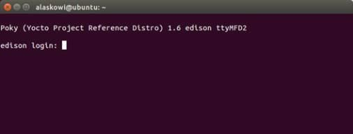

Establish a serial connection
Use the Screen utility that you installed in the previous section to gain command line access of your IoT board. For example: sudo screen /dev/ttyUSB0 115200
-
Open a new Terminal window.
-
Connect to the USB serial device using Screen.
sudo screen /dev/ttyUSB0 115200-
“115200” indicates the baud rate. Always use 115200.
-
You may be asked for your root password. Type in your root password and press Enter.
-
-
When you see a blank screen, press the Enter key.
For Intel® Edison boards running older firmware: You may need to press the Enter key twice.
-
Once connected you will see a login prompt.
Type in “root” for the username and press Enter.

Don’t see a “usbserial” device listed?
-
Do you have the UART/serial cable connected? Refer to UART/serial micro-USB cable.
-
Is your IoT board powered on?